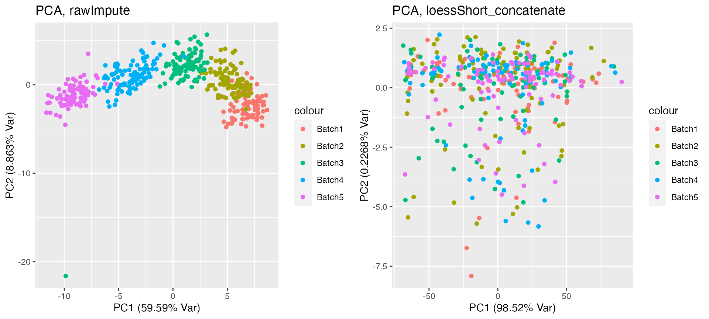
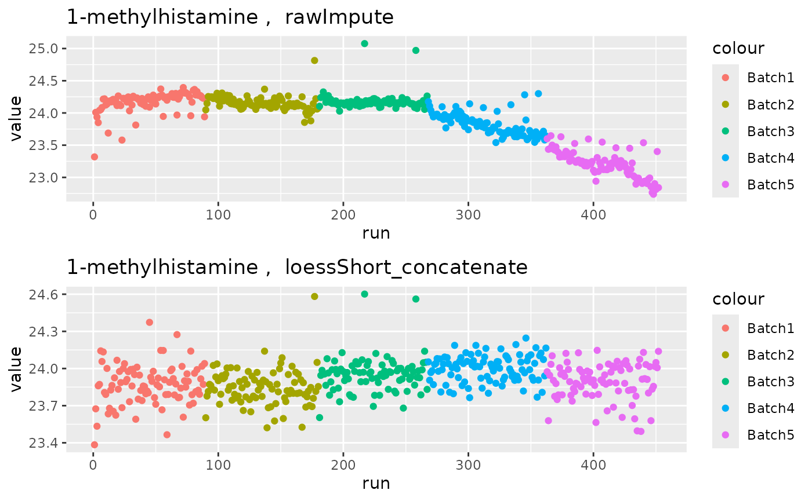
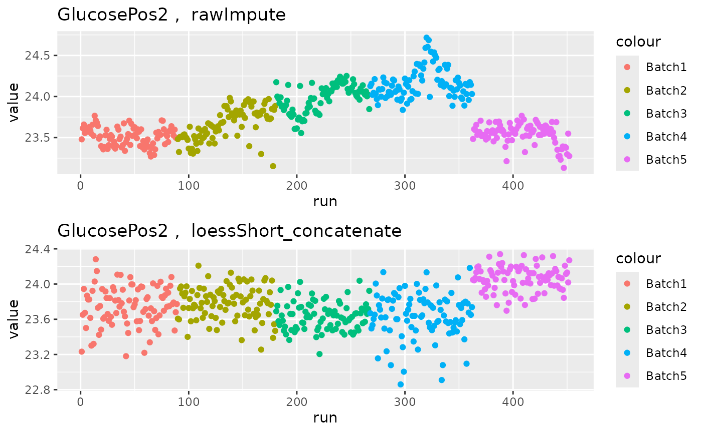

hRUV.RmdhRUV is a package for normalisation of multiple batches
of metabolomics data in a hierarchical strategy with use of samples
replicates in a large-scale studies. The tool utilises 2 types of
replicates: intra-batch and inter-batch replicates to estimate the
unwanted variation within and between batches with RUV-III. We have
designed the replicate embedding arrangements within and between batches
from http://shiny.maths.usyd.edu.au/hRUV. Our novel tool is a
novel hierarchical approach to removing unwanted variation by harnessing
information from sample replicates embedded in the sequence of
experimental runs/batches and applying signal drift correction with
robust linear or non-linear smoothers.
Below is a schematic overview of hRUV framework.
The purpose of this vignette is to illustrate use of
hRUV.
Install the R package from GitHub using the devtools
package:
if (!("devtools" %in% rownames(installed.packages())))
install.packages("devtools")
library(devtools)
devtools::install_github("SydneyBioX/hRUV", build_vignettes = TRUE)First, we will load the hRUV package and other packages required for
the demonstration. If you haven’t installed the packages yet, please
follow the steps above. You can install dplyr package with
the command install.packages("dplyr") and
SummarizedExperiment object
suppressPackageStartupMessages({
library(hRUV)
library(dplyr)
library(SummarizedExperiment)
})
# You can install dplyr package with the command
# install.packages("dplyr")
# To install SummarizedExperiment,
# if (!requireNamespace("BiocManager", quietly = TRUE))
# install.packages("BiocManager")
#
# BiocManager::install("SummarizedExperiment")For demonstration purposes, we provide a first 5 batches of BioHEART-CT metabolomics data. The data contains metabolite signals of each patients, and contains sample replicate within and between batches. The data is deposited at https://github.com/SydneyBioX/BioHEART_metabolomics.
## [1] "SummarizedExperiment"
## attr(,"package")
## [1] "SummarizedExperiment"
b1## class: SummarizedExperiment
## dim: 79 89
## metadata(1): name
## assays(1): raw
## rownames(79): 1-methylhistamine 2-Arachidonyl glycerol ... Valine
## Valine-d8
## rowData names(1): metabolite
## colnames(89): 1_Pool 0 2_26 ... 88_Pool 9 89_25
## colData names(7): Sample sample_name ... biological_sample batch_info
b2## class: SummarizedExperiment
## dim: 79 91
## metadata(1): name
## assays(1): raw
## rownames(79): 1-methylhistamine 2-Arachidonyl glycerol ... Valine
## Valine-d8
## rowData names(1): metabolite
## colnames(91): 1_Pool 1 2_115 ... 90_193 91_Pool 11
## colData names(7): Sample sample_name ... biological_sample batch_infoThe data is already formatted in to a
SummarizedExperiment object.
We will now perform preprocessing of all batches.
dat_list = list(
"Batch1" = b1,
"Batch2" = b2,
"Batch3" = b3,
"Batch4" = b4,
"Batch5" = b5
)
# checking the dimensions of the data
lapply(dat_list, dim)## $Batch1
## [1] 79 89
##
## $Batch2
## [1] 79 91
##
## $Batch3
## [1] 79 87
##
## $Batch4
## [1] 79 95
##
## $Batch5
## [1] 79 90
# Log transform raw assay
dat_list = lapply(dat_list, function(dat) {
assay(dat, "logRaw", withDimnames = FALSE) = log2(assay(dat, "raw") + 1)
dat
})
# Setting the order of batches
h_order = paste("Batch", 1:5, sep = "")
h_order = h_order[order(h_order)]
# checking the dimensions of the data before cleaning
lapply(dat_list, dim)## $Batch1
## [1] 79 89
##
## $Batch2
## [1] 79 91
##
## $Batch3
## [1] 79 87
##
## $Batch4
## [1] 79 95
##
## $Batch5
## [1] 79 90
dat_list = hRUV::clean(dat_list, threshold = 0.5,
method = "intersect", assay = "logRaw", newAssay = "rawImpute")
# checking the dimensions of the data after cleaning
lapply(dat_list, dim)## $Batch1
## [1] 61 89
##
## $Batch2
## [1] 61 91
##
## $Batch3
## [1] 61 87
##
## $Batch4
## [1] 61 95
##
## $Batch5
## [1] 61 90We have filtered metabolites with more than 50% of missing values per
batch and selected metabolites that are quantified across all batches
(intersect) with clean function. After filtering process,
clean function performs k-nearest neighbour imputation. The
new imputed assay is named as rawImpute. After cleaning we
now have 61 intersecting metabolites quantified for each batch.
We can proceed to perform intra- and inter-batch normalisation with hRUV.
dat = hruv(
dat_list = dat_list,
assay = "rawImpute",
intra = "loessShort",
inter = "concatenate",
intra_k = 5, inter_k = 5,
pCtlName = "biological_sample",
negCtl = NULL,
intra_rep = "short_replicate",
inter_rep = "batch_replicate"
)Here, we perform hRUV on rawImpute assay. For intra batch normalisation, we perform loess smoothing on samples and RUV-III using short replicates with parameter k set to 5. For inter batch normalisation, we perform concatenating hierarchical structure using batch replicate samples. The RUV-III paramter k is also set to 5 for inter-batch normalisation.
We can now compare before and after hruv normalisation.
library(gridExtra)##
## Attaching package: 'gridExtra'## The following object is masked from 'package:Biobase':
##
## combine## The following object is masked from 'package:BiocGenerics':
##
## combine## The following object is masked from 'package:dplyr':
##
## combine
p1 = hRUV::plotPCA(dat, assay = "rawImpute", colour = dat$batch_info)
p2 = hRUV::plotPCA(dat, assay = "loessShort_concatenate", colour = dat$batch_info)
grid.arrange(p1, p2, nrow = 1)
From the above PCA plot, you can see that the assay before normalisation has strong batch effect. The assay after normalisation on the right panel does no longer show batch effect.
p1 = hRUV::plotRun(dat, assay = "rawImpute", colour = dat$batch_info)
p2 = hRUV::plotRun(dat, assay = "loessShort_concatenate", colour = dat$batch_info)
grid.arrange(p1$`1-methylhistamine`, p2$`1-methylhistamine`, nrow = 2)
The run plot above shows signal drift present in the raw data for metabolite 1-methylhistamine. This is corrected after hRUV normalisation.
grid.arrange(p1$GlucosePos2, p2$GlucosePos2, nrow = 2)
Further, in metabolite GlucosePos2, the assay before normalisation shows strong batch effects, but they are corrected after hRUV normalisation.
## R version 4.4.1 (2024-06-14)
## Platform: x86_64-pc-linux-gnu
## Running under: Ubuntu 22.04.4 LTS
##
## Matrix products: default
## BLAS: /usr/lib/x86_64-linux-gnu/openblas-pthread/libblas.so.3
## LAPACK: /usr/lib/x86_64-linux-gnu/openblas-pthread/libopenblasp-r0.3.20.so; LAPACK version 3.10.0
##
## locale:
## [1] LC_CTYPE=C.UTF-8 LC_NUMERIC=C LC_TIME=C.UTF-8
## [4] LC_COLLATE=C.UTF-8 LC_MONETARY=C.UTF-8 LC_MESSAGES=C.UTF-8
## [7] LC_PAPER=C.UTF-8 LC_NAME=C LC_ADDRESS=C
## [10] LC_TELEPHONE=C LC_MEASUREMENT=C.UTF-8 LC_IDENTIFICATION=C
##
## time zone: UTC
## tzcode source: system (glibc)
##
## attached base packages:
## [1] stats4 stats graphics grDevices utils datasets methods
## [8] base
##
## other attached packages:
## [1] gridExtra_2.3 SummarizedExperiment_1.34.0
## [3] Biobase_2.64.0 GenomicRanges_1.56.1
## [5] GenomeInfoDb_1.40.1 IRanges_2.38.1
## [7] S4Vectors_0.42.1 BiocGenerics_0.50.0
## [9] MatrixGenerics_1.16.0 matrixStats_1.3.0
## [11] dplyr_1.1.4 hRUV_0.1.3
## [13] BiocStyle_2.32.1
##
## loaded via a namespace (and not attached):
## [1] impute_1.78.0 gtable_0.3.5 ggplot2_3.5.1
## [4] xfun_0.46 bslib_0.8.0 htmlwidgets_1.6.4
## [7] lattice_0.22-6 tzdb_0.4.0 generics_0.1.3
## [10] vctrs_0.6.5 tools_4.4.1 curl_5.2.1
## [13] tibble_3.2.1 fansi_1.0.6 highr_0.11
## [16] DMwR2_0.0.2 xts_0.14.0 pkgconfig_2.0.3
## [19] Matrix_1.7-0 desc_1.4.3 lifecycle_1.0.4
## [22] GenomeInfoDbData_1.2.12 farver_2.1.2 compiler_4.4.1
## [25] textshaping_0.4.0 munsell_0.5.1 htmltools_0.5.8.1
## [28] class_7.3-22 sass_0.4.9 yaml_2.3.10
## [31] tidyr_1.3.1 pillar_1.9.0 pkgdown_2.1.0
## [34] crayon_1.5.3 jquerylib_0.1.4 MASS_7.3-60.2
## [37] cachem_1.1.0 DelayedArray_0.30.1 rpart_4.1.23
## [40] abind_1.4-5 tidyselect_1.2.1 digest_0.6.36
## [43] purrr_1.0.2 bookdown_0.40 labeling_0.4.3
## [46] fastmap_1.2.0 grid_4.4.1 colorspace_2.1-1
## [49] cli_3.6.3 SparseArray_1.4.8 magrittr_2.0.3
## [52] S4Arrays_1.4.1 utf8_1.2.4 withr_3.0.1
## [55] readr_2.1.5 scales_1.3.0 UCSC.utils_1.0.0
## [58] TTR_0.24.4 rmarkdown_2.27 XVector_0.44.0
## [61] httr_1.4.7 quantmod_0.4.26 ragg_1.3.2
## [64] zoo_1.8-12 hms_1.1.3 evaluate_0.24.0
## [67] knitr_1.48 rlang_1.1.4 glue_1.7.0
## [70] DBI_1.2.3 BiocManager_1.30.23 jsonlite_1.8.8
## [73] R6_2.5.1 systemfonts_1.1.0 fs_1.6.4
## [76] zlibbioc_1.50.0